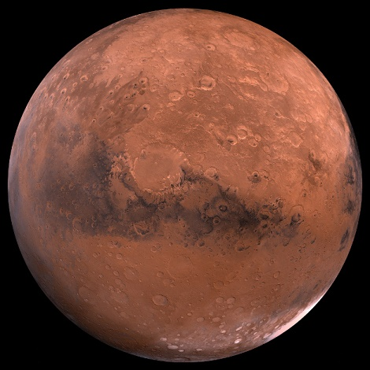
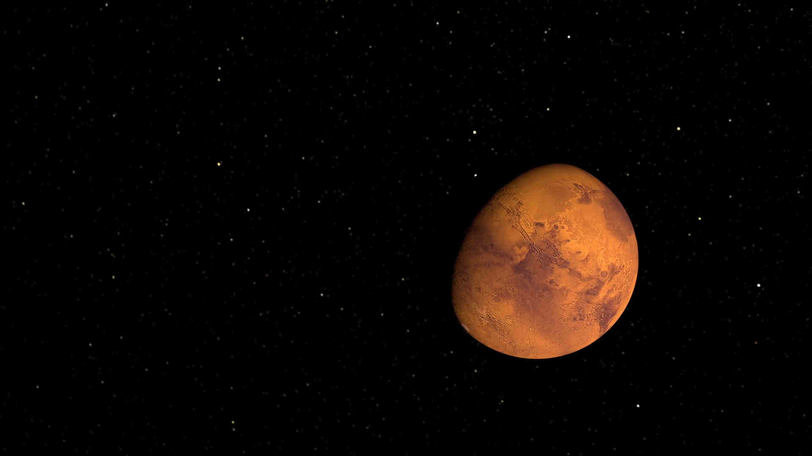

The Mars
Solar System Sun Mercury Venus Earth Mars Jupiter Saturn Uranus Neptune Pluto

Definition

Mars is the fourth planet from the Sun and last of the terrestrial planets. Like
the rest of the planets of the solar system (except Earth), Mars is named after a
mythological-the Roman god of war. In addition to its official name, Mars is sometimes
called the Red Planet because of the brownish-red color of its surface.
Mars is the second smallest planet in the solar system behind Mercury.
Facts
-Mars is the fourth planet from the Sun.
-The planet is named after Mars, the Roman god of war.
-The landmass of Mars and Earth is very similar.
-Only 16 of the 39 mars mission have been successful.
-Peices of Mars have been found on Earth.
-Mars was once believed to be home to intelligent life.
-The tallest mountain known in the solar system is on Mars.
-Mars experience huge dust storms-the largest in our solar system.
-The Sun looks about half its size half it does from Earth when seen from Mars.
-With the exception of Earth, Mars is the most hospitable to life.
-It takes Mars 687 Earth days to orbit the Sun. 
-Mars has seasons like Earth, but they last twice as long.
-Mars is the only other planet besides Earth that has polar ice caps.
-The orbit of Mars is the most eccentric of the eight planets.
-Mars does not have a magnetic field
Profile
Mass :641,693,000,000,000 billion kg (0.107 x Earth)
Equitorial Diameter :6,805 km
Polar Diameter :6,755 km
Equitorial Circumference :21,297 km
Known Moons :2
Notable Moons :Phobos & Deimos
Orbit Distance :227,943,824 km (1.38 AU)
Orbit Period :686.98 Earth days (1.88 Earth years)
Surface Temperature :-87 to -5 degrees Celsius
First Record :2nd Millenium BC
Recorded By :Egyptian astronomers